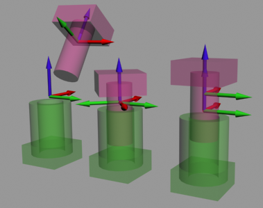
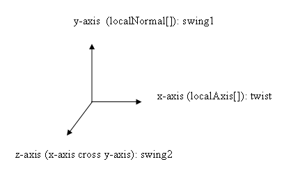

In the SDK, all joint types share some common properties which are collected in the NxJoint class and the corresponding descriptor NxJointDesc. First, they all have two actor pointers. Each of the actors, including the implicit world actor represented by a NULL actor pointer, have a joint frame that is specified relative to its actor frame. The two frames are stored in NxJointDesc as two basis vectors and a point, shown below:
NxVec3 localNormal[2];
NxVec3 localAxis[2];
NxVec3 localAnchor[2];
The first (X) basis vector of joint space is called the 'normal', the second (Z) is called the 'axis', and the third (Y) is called the 'binormal', computed as a cross product of the first two. The 'anchor' is the point where the frame is located. The word 'local' denotes that the frames are not in the world but rather in the actor space.
These two frames uniquely identify the geometric placement of the joint within the simulation. They never change because they are fixed relative to the respective actors; however, the frames can end up in different places. The joint moves when the connected actors move, therefore these frames, when transformed to the world space via the actor's transform, also move. The image below shows joint frames for a cylindrical joint. In the far left configuration, the blue z axis of the frames does not match up, meaning that this configuration suffers from significant joint error. The other two configurations are permissible.

Use the NxJoint or NxJointDesc methods setGlobalAxis() / setGlobalAnchor() to specify the joint frames in world space. They will be transformed internally to the local spaces of the actors, which are needed because the simulation does not work without some error. For example, the ball joint may be pulled apart by a large force so that the two local frames no longer match up in world space. It is important to let the user have access to this error, like all internal states, so that it is possible to save and restore at a later time with the simulation proceeding exactly where it left off. (See Joint Projection for a method to correct severe joint errors.)
Not all joint types need an entire frame to specify their geometry. For example, a simple spherical joint only needs the attachment point to be specified relative to each actor. However, the additional features of the spherical joint, such as the limits and spring behavior, need the additional axes. Typically the axis vector is the primary axis of the joint, while the other two vectors are orthogonal to this. (See the API documentation on different joint types to see how the joints interpret the basis vectors.)
NOTE: The axis convention for joint frames follows a left-handed rule, differing from the world frame convention which uses a right-handed rule.
The 6 DOF joint is an exception, using a right-handed convention as shown below:
